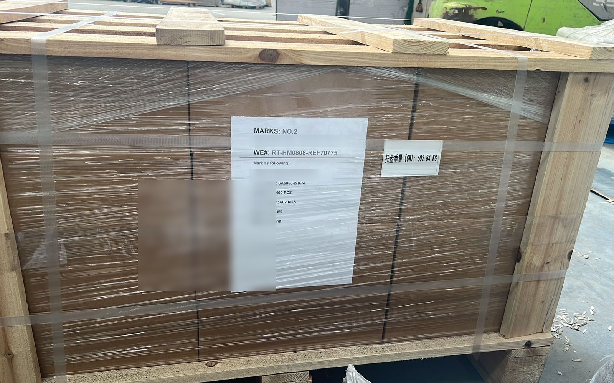

干线
中国到伊朗汽运干线：TIR 卡航 14–18 天直达德黑兰海关
chinairantrucks 用 TIR 密封挂车,把货从中国的集货仓一路拉到德黑兰的海关保税库。这是一手干线——在霍尔果斯口岸和德黑兰派驻自营调度,无中间转包——按仓到关交付,不做门到门。到关后由收货人的清关行清关提货。
- 14–18 个自然日,国内集货仓至德黑兰西关(Gomrok Gharb)
- 出境走霍尔果斯(主)或伊尔克什坦;入境走萨拉赫斯(主)或因切布伦
- 贸易术语 CPT / DAP 德黑兰海关——由买方清关行缴税、提货
- 每周二、周五发车,义乌仓与深圳平湖仓
- 整车及散货拼箱,1 CBM 或 100 KG 起
- CMR 货运一切险,每车保额最高 25 万美元
“仓到关”是什么意思
在义乌(苏溪)、深圳(平湖)、广州(白云)、上海集货;也可把货交到霍尔果斯监管区。
挂车只封一次(TIR carnet),只开一次箱——在目的地海关保税库。
交付地点是德黑兰西关(Gomrok Gharb)、沙赫里亚尔海关或阿普林陆港。不是你的地址。
到关后出具海关入库单(Ghabz-e Anbar)交给你的清关行,清关行在伊朗 ASYCUDA 系统缴进口税、放货。
本站不做伊朗清关。清关由收货人指定的持牌清关行办理。
陆路干线,分段拆解
第 1–2 天——国内集货。义乌仓、深圳平湖仓收货,核对装箱单与发票,打托装 13.6 米帘布车,传输出口预配舱单。
第 3–4 天——霍尔果斯。车队在霍尔果斯综合保税区办理出口报关放行。海关核验后加施 TIR 关锁与防篡改电子封签。
第 5–11 天——中亚过境。经哈萨克斯坦(阿拉木图—奇姆肯特)、土库曼斯坦(法拉普—马雷)直通,依 TIR 公约:免过境关税、免押金、不开箱、不倒装。双驾轮换。
第 12–14 天——萨拉赫斯。由伊朗东北部萨拉赫斯公路口岸入境。海关比对封签,数据录入 ASYCUDA,签发境内保税转关许可发往德黑兰。
第 15–18 天——德黑兰西关。车队直抵 Gomrok Gharb 保税库或阿普林陆港。卸货、出具 Ghabz-e Anbar,清关移交你的清关行。
伊尔克什坦口岸(过吉尔吉斯、乌兹别克)是次要路径,带 0.4% 货值发票过境税;霍尔果斯—哈萨克斯坦走廊不加这一项。

承运品类
普货,整车及拼箱:汽配、电子、机械、建材、日用百货。
9 类锂电池——UN 3480(电芯/电池组)、UN 3481(设备内配锂电),以及工商业储能柜、磷酸铁锂电池组。整车配防火隔板,按 ADR 标准。需提供完整 16 项 MSDS 及 UN 包装证明。
光伏与电力工程:单晶光伏组件、工业逆变器、升压变压器,气垫悬挂车运输。
超限大件机械:注塑机、数控加工中心、油压机、挖机,17.5 米低平板/凹梁车。
化工原料与工业树脂,需附有效 MSDS。
整车、新能源车、成套设备项目另询。

汽运 vs 海运、空运
TIR 汽运:14–18 天,直入德黑兰海关保税库,全程封签、不中转。
阿巴斯海运:35–55 天到堆场,再单独接一段到德黑兰内陆运输,港口多次操作。
德黑兰空运(IKA):5–8 天,但大容量单体电池、超限件限制严格,每公斤成本最高。
锂电、化工、重机械,汽运往往是唯一能按可行价格收货的方式。
车队、监控与保险
自有及协议调度 45+ 台斯堪尼亚、沃尔沃 480–540 马力车头,配 Krone、Schmitz 帘布挂车,符合 IRU 过境技术标准。
北斗三号 + GPS 双模定位,每小时上传坐标,门磁电子封签开合状态。
CMR 货运一切险,每车保额最高 25 万美元,自国内装车至德黑兰海关卸货。
持 TIR 国际道路运输经营资质,在霍尔果斯口岸与德黑兰派驻调度人员。
班期与如何下单
每周二、周五发车,义乌仓与深圳平湖仓。
拼箱 1 CBM 或 100 KG 起;整车走 13.6 米帘布车,超限走 17.5 米低平板。
询价发三样:始发仓;目的海关(德黑兰西关 / 阿普林 / 马什哈德);货物数据——HS 编码、总重(KG)、体积(CBM)。
常见问答
做不做伊朗境内双清包税到门(DDP)?
不做。我们只做跨境干线,CPT / DAP 条款,从中国集货仓到德黑兰西关(Gomrok Gharb)、阿普林陆港或沙赫里亚尔海关。由收货人的持牌清关行缴进口税、提货。
到德黑兰海关要多少天?
14 至 18 个自然日,从义乌或深圳仓发车到德黑兰西关入库,含霍尔果斯出境报关与萨拉赫斯入境转关。
纯锂电池(UN 3480)能走吗?
能。依 TIR 与 ADR 公约,公路可承运 UN 3480 / 3481 的 9 类锂电、储能系统及工业原料,需附完整 16 项 MSDS 与 UN 包装证明。
拼箱最低多少起运?
1 立方米(CBM)或 100 公斤,义乌仓、深圳平湖仓,每周二、周五拼柜发德黑兰海关。
走哪些口岸?
出境:霍尔果斯进哈萨克斯坦为主,伊尔克什坦经吉尔吉斯为次。入境:萨拉赫斯为主,因切布伦为备选。
伊朗进口税谁付?
由收货人通过其持牌清关行,在伊朗 ASYCUDA 系统缴纳,货到保税库、出具 Ghabz-e Anbar 之后办理。
相关: 时效详解 · TIR 卡航怎么回事 · 霍尔果斯还是伊尔克什坦 · 怎么询价 · 运费看什么